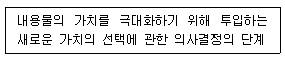
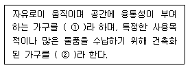
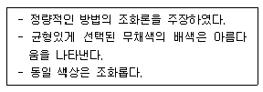
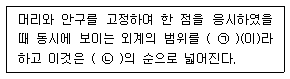
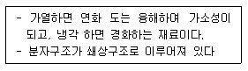

실내건축기사(구) (2007-03-04 기출문제)
1과목: 실내디자인론
1. 다음 중 동선계획에 대한 설명으로 옳은 것은?
- 동선의 빈도가 높은 경우 동선 거리를 연장하고 곡선으로 처리한다.
- 동선의 속도가 빠른 경우 단차이를 두거나 계단을 만들어 준다.
- 동선의 하중이 큰 경우 통로의 폭을 좁게 하고 쉽게 식별 할 수 있도록 한다.
- 동선이 복잡해 질 경우 별도의 통로공간을 두어 동선을 독립시킨다.
(정답률: 70%)

2. 부엌의 평면형 중 작업동선이 짧고 부엌의 면적을 줄일 수 있는 이점이 있으나 평면계획상 외부로 통하는 출입구의 설치가 곤란한 형식은?
- 일렬형
- ㄷ자형
- 병렬형
- ㄱ자형
(정답률: 78%)
3. 실내디자이너의 역할과 가장 관계가 먼 것은?
- 실내공간을 설계하는 디자이너
- 실내디자인 관련 요소를 계획하는 디자이너
- 실내공간에 필요한 그래픽을 제작하는 디자이너
- 건물내부와 가구디자인, 배치를 계획하는 디자이너
(정답률: 70%)
4. 다음의 실내디자인에 대한 설명 중 옳은 것은?
- 사회의 다원화와 더불어 공간의 질적, 양적 향상이 필요하지만 대중성은 중요하지 않다.
- 상업공간 디자인은 수익성을 위한 실내 공간 창출이 가장 중요한 가치이나 다른 요소도 고려한다.
- 실내공간은 목적에 따라 기능성, 수익성, 심미성등으로 구분할 수 있으며 명확한 구분이 항상 가능하다.
- 실내공간은 인위적인 공간이므로 정서적 분위기를 수용하는 디자인은 중요한 요소가 아니다.
(정답률: 77%)
5. 아래의 설명은 무엇에 대한 정의인가?

- 실내디자인 개념
- 실내디자인 구성
- 실내디자인 이미지
- 실내디자인 진행과정
(정답률: 47%)
6. 주택의 욕실 계획에 대한 설명 중 옳지 않은 것은?
- 욕실은 침실전용으로 설치되는 것이 이상적이다.
- 방수성, 방오성이 큰 마감재료를 사용한다.
- 모든 욕실에는 기능상 욕조, 변기, 세면기가 통합적으로 갖추어지게 하여야 한다.
- 욕실의 조명은 방습형 조명기구를 사용한다.
(정답률: 58%)
7. “Design image를 구축한다.”의 의미로 가장 알맞은 것은?
- 기능적, 정서적, 특징적 공간이미지를 만드는 것
- 소유물을 list-up하는 것
- 사용되는 재료를 선택하는 것
- 디자인의 우위성을 부각시키는 것
(정답률: 82%)
8. 상업공간에서 비주얼 머천다이징(VMD) 전개 시스템에 대한 설명으로 옳은 것은?
- 비주얼 프레젠테이션(VP)은 고객의 시선이 처음 닿는 곳을 중심으로 점 이미지를 표현한다.
- 포인트 프레젠테이션(PP)은 쇼 윈도우, 층별 메인스테이지 등에서 블록 이미지를 표현한다.
- 아이템 프레젠테이션(IP)은 테이블, 벽면 상단이나 상판등에서 기본 상품을 표현한다.
- 아이템 프레젠테이션(IP)은 불록별 상품의 포인트를 표현하며, 블록의 이미지를 높인다.
(정답률: 38%)
9. 조명의 연출기법이 아닌 것은?
- 월워싱(wall washing)기법
- 스파클(sparkle)기법
- 패키지 유닛(package unit)기법
- 글레이징(glazing)기법
(정답률: 86%)
10. 다음의 커튼에 대한 설명 중 옳지 않은 것은?
- 글래스 커튼(glass curtain)은 얇은 천으로 만드는 것으로 유리 바로 앞에 단다.
- 새시 커튼(sash curtain)은 창문 전체를 커튼으로 처리하지 않고 반 정도만 친 형태이다.
- 드로우 커튼(draw curtain)은 창문 위의 수평가로 대 위에 설치하는 것으로 글래스 커튼보다 무거운 재질의 직물로 처리한다.
- 드레퍼리 커튼(draperies curtain)은 창문에 느슨하게 걸려있는 가벼운 커튼으로 일반적으로 잘 사용되지 않는다.
(정답률: 52%)
11. 디자인 요소 중 “패턴”에 대한 설명으로 옳지 않은 것은?
- 패턴은 인위적으로 구성되는 것도 있으나 어떤 단위화된 재료가 조합될 때 저절로 생기는 것이다.
- 인위적인 패턴의 구성은 반복을 명확히 함으로써만 이루어 진다.
- 패턴을 취급할 때 중요한 것은 그 공간속에 있는 모든 패턴성을 갖는 것과의 조화방법이다.
- 연속성 있는 패턴은 리듬감이 생기는데 그 리듬이 공간의 성격이나 스케일과 맞도록 해야 한다.
(정답률: 65%)
12. 다음 중 휴먼스케일(Human Scale)에 대한 설명으로 옳지 않은 것은?
- 휴먼스케일(Human Scale)은 인간의 신체를 기준으로 파악, 측정되는 척도기준이다.
- 휴먼스케일(Human Scale)이 적절히 적용된 공간은 안정되고 안락한 감을 주는 환경이 된다.
- 휴먼스케일(Human Scale)은 실내공간의 계획에만 국부적으로 적용된다.
- 휴먼스케일(Human Scale)은 인간을 기준으로 계산하여 공간에 대해 감각적으로 가장 쾌적한 비율이다.
(정답률: 89%)
13. 다음 중 주택의 거실에 관한 설명으로 옳지 않은 것은?
- 거실의 가구는 건축적 이미지와 양식의 조화뿐만 아니라 질감과 색채에 있어서도 일관된 조화를 이루어야 한다.
- 거실은 특별히 응접실이 따로 구분되어 있지 않는한 방문자가 머물러야 하는 공간이므로 현관과 가까이 있는 것이 좋다.
- 거실은 실내의 각 실과 연계가 용이하도록 통로화되어야 한다.
- 거실의 선반 가구는 다른 가구들과 조화될 수 있도록 재료와 디자인을 관련시켜서 계획하여야 한다.
(정답률: 62%)
14. 다음 중 조화에 관한 설명으로 가장 알맞은 것은?
- 색채, 문양, 텍스처, 형태 등의 모티브가 일정하게 되풀이 됨으로써 이루어지는 리듬이다.
- 모든 시각적 요소에 대하여 극적 분위기를 주는 상반된 성격의 결합에서만 이루어진다.
- 음악적 감각이 조형화된 것으로 청각의 원리가 시각적으로 표현된 것이다.
- 동일성이 높은 요소들의 결합은 조화를 이루기 쉽지만 단조로울 수 있다.
(정답률: 70%)
15. 다음 중 리듬의 원리와 가장 관계가 먼 것은?
- 반복
- 점이
- 방사
- 스케일
(정답률: 80%)
16. 다음의 공간구성의 기법에 관한 설명 중 틀린 것은?
- 오픈 플래닝은 공간을 폐쇄된 실로 구획하기 때문에 시각적으로나 청각적으로나 프라이버시가 높다.
- 시스템이 디자인에 적용되면 각각의 많은 구성요소들은 상호 의존적이며 유기적 질서를 유지하면서 동일한 목표를 향하여 체계적인 관계를 갖는다.
- 그리드 플래닝에 있어 디자인의 각 요소는 그리드가 지정한 위치에 제한되어 질서적으로 논리 정연하게 계획되어질 수 있다.
- 모듈러 플래닝은 모듈을 설정하여 계획하는 것으로 설계작업을 단순화 시켜주며 대량생산이 가능한 방식이다.
(정답률: 80%)
17. 실내공간 구성요소 중 벽(Wall)에 대한 설명으로 옳지 않은 것은?
- 벽은 공간을 에워싸는 수직적 요소로 수평방향을 차단하여 공간을 형성한다.
- 시각적 대상물이 되거나 공간에 초점적 요소가 되기도 한다.
- 높은 벽은 주로 영역과 영역을 구분하고 낮은 벽은 공간의 폐쇄성이 요구되는 곳에 사용된다.
- 가구, 조명 등 실내에 놓여지는 설치물에 대해 배경적 요소가 되기도 한다.
(정답률: 86%)
18. 다음 중 레스토랑의 죠닝(zoning) 구분에 속하지않는 것은?
- 영업부분
- 개인생활부분
- 관리부분
- 조리부분
(정답률: 86%)
19. 다음의 가구에 대한 설명 중 ( )안에 들어갈 말로 알맞은 것은?

- ① 붙박이가구, ② 이동가구
- ① 이동가구, ② 붙박이가구
- ① 고정가구, ② 가동가구
- ① 이동가구, ② 가동가구
(정답률: 78%)
20. 사선이 주는 느낌과 가장 관계가 먼 것은?
- 생동감
- 안정감
- 운동감
- 약동감
(정답률: 90%)
2과목: 색채학
21. 살찐 사람이 입었을 때 날씬하게 보이는 옷의 배색은?
- 가로 줄무늬, 고채도, 저명도, 난색
- 세로 줄무늬, 저채도, 저명도, 한색
- 가로 줄무늬, 저채도, 고명도, 한색
- 세로 줄무늬, 고채도, 고명도, 난색
(정답률: 75%)
22. 가법혼색에 대하여 ‘그라스만’(Grassmann)은 ‘색자극의 규정 표시에 있어서는 상호 독립된 3량이 필요하다’ 고 하였다. 다음 중 3량에 속하지 않는 것은?
- 순색
- 순도
- 휘도
- 주파장
(정답률: 32%)
23. 우리 눈의 구조 중 카메라의 렌즈와 같은 역할을 하는 부분은?
- 각막
- 동공
- 수정체
- 홍채
(정답률: 53%)
24. 다음 중 색채의 거리감을 가장 잘 설명한 것은?
- 주위의 색과 비스한 명도일 때 진출된다.
- 주변보다 어둡게 보일 때 진출된다.
- 주변보다 채도가 높을 때 진출된다.
- 주변보다 명도가 높을 때 진출된다.
(정답률: 54%)
25. 다음 중 가장 가볍게 느껴지는 색은?
- 파랑
- 노랑
- 초록
- 연두
(정답률: 80%)
26. 다음 중 수식형용사를 적용한 색채표현이 바른 것은?
- 어두운 보랏빛 회색
- 노란 밝은 주황
- 자줏빛 흐린 분홍
- 맑은 자주
(정답률: 46%)
27. 다음 오스트발트의 기호 표시법 중 가장 밝은 백색은?
- p
- c
- a
- e
(정답률: 40%)
28. 다음 중 두 색료를 혼합하여 무채색이 되는 것은?
- 검정 + 보라
- 주황 + 노랑
- 회색 + 초록
- 청록 + 빨강
(정답률: 70%)
29. 오스트발트 색채조화에서 gc-lg-pl의 기호는 어떤 조화에 해당하는가?
- 등백 계열 조화
- 등흑 계열 조화
- 등순 계열 조화
- 무채색의 조화
(정답률: 53%)
30. 다음 중 고동색의 먼셀 기호는?
- 5R 3.5/4.5
- 5P 3/4
- 5R 9/5
- 2.5VR 2/4
(정답률: 36%)
31. 다음이 설명하는 것은?

- 오스트발트 색채조화론
- 비렌의 색채조화론
- 문 스펜서의 색채조화론
- 먼셀 색채조화론
(정답률: 52%)
32. 다음 중 노란색과 배색하였을 때 가장 부드럽게 조화되는 색은?
- 회색
- 빨강
- 보라
- 남색
(정답률: 43%)
33. 다음 중 색입체에 관한 설명이 잘못된 것은?
- 색의 3속성을 3차원 공간에다 계통적으로 배열한것이다.
- 먼셀표색계의 색입체는 나무의 형태를 닮아 color tree라고 한다.
- 오스트발트 표색계의 색입체는 타원과 같은 형태이다.
- 색입체의 중심축은 무채색 축이다.
(정답률: 69%)
34. 똑같은 에너지를 가진 각 단색광의 밝기에 대한 감각은?
- 비시감도(比視感度)
- 시감도(視感度)
- 명시도(明視度)
- 암시도(暗視度)
(정답률: 49%)
35. 색을 정확히 보기 위한 관찰방법 설명으로 잘못된 것은?
- 색의 관찰은 몇 분간 조명광하에서 작업면의 유채색에 눈을 순응시키고 나서 한다.
- 시료면과 표준면을 때때로 좌우를 바꿔 넣어 비교한다.
- 연속하여 비교작업을 하는 경우에는 몇 분 간격의 주기로 눈을 쉬면서 한다.
- 선명한 색을 관찰한 직후에 엷은 색 또는 보색에 가까운 색상을 가진 색을 계속 비교해서는 안된다.
(정답률: 50%)
36. 동양의 전통 방위 상징색으로 맞는 것은?
- 홍색 –동쪽
- 청색 –서쪽
- 적색 –남쪽
- 백색 –북쪽
(정답률: 48%)
37. 다음 중 제품의 크기를 가장 커 보이게 하는 포장지 색은?
- 파랑
- 자주
- 노랑
- 녹색
(정답률: 32%)
38. 색채조절의 일반적인 기준이 적용된 예로 타당성이 가장 낮은 것은?
- 달리는 자동차에는 명시도가 높은 색을 사용하는 것이 안전하다.
- 주택의 큰 가구에 주목성이 강한 색을 사용하여 내부에 통일성을 준다.
- 산업시설에서의 창틀은 흰색으로 하거나 외부 밝기 와의 대조를 줄이기 위해 밝은 색조로 한다.
- 유치원은 연노랑, 산호색, 복숭아색과 같은 온색의 밝은 환경이 적합하다.
(정답률: 82%)
39. 연변대비란?
- 면적이 커지면 실제보다 명도, 채도가 높아 보이는 현상이다.
- 색의 차고 따뜻함에 변화가 오는 대비현상이다.
- 어떤 두 색이 맞붙어 있을 때 그 경계 부분에서 대비현상이 더 강하게 나타나는 현상이다.
- 어떤 색을 보고 난 뒤 다른 색을 보는 경우 먼저 본 색의 영향으로 색이 다르게 보이는 현상이다.
(정답률: 48%)
40. 명소시에서 암소시로 이행할 때 붉은 색은 어둡게 되고 녹색과 청색은 상대적으로 밝게 보이는 현상은?
- 색순응 현상
- 오스트발트 현상
- 푸르킨예 현상
- 명암순응 현상
(정답률: 85%)
3과목: 인간공학
41. 작업기억(working Memory) 중에서 정보를 유지하는 적절한 방법이 아닌 것은?
- 정보를 의미있고 특징있는 청크(chunk)로 제시한다.
- 정보를 분석하고, 과거의 지식과 연관시킨다.
- 정보를 청크(chunk)로 만들어 상기하는 방법을 훈련시킨다.
- 가능한 한 10개 정도의 정보를 제시한다.
(정답률: 64%)
42. 일반적으로 피부의 단위 면적당 신경의 수가 많은 것에서 적은 순으로 올바르게 나열된 것은?
- 통점 ＞ 압점 ＞ 냉점 ＞ 온점
- 압점 ＞ 냉점 ＞ 온점 ＞ 통점
- 냉점 ＞온점 ＞ 통점 ＞ 압점
- 온점 ＞ 통점 ＞ 압점 ＞ 냉점
(정답률: 60%)
43. 인간공학의 연구분석방법 중 직접적 관찰법과 관련이 없는 것은?
- Time Motion Study에 의한 방법
- 반응조사에 의한 방법
- 조사자의 의견, 면접 또는 제안에 의한 방법
- Layout에 의한 방법
(정답률: 27%)
44. 밝은 곳에서 갑자기 어두운 곳으로 들어가면 잘 보이지 않는 암순응(dark adaptation)에 대한 설명으로 틀린 것은?
- 동공이 확대된다.
- 완전 암순응은 보통 1분 이내 가능하다.
- 암순된 눈은 적색이나 보라색에 가장 둔감하다.
- 색에 민감한 원추 세포는 감수성을 잃게 된다.
(정답률: 68%)
45. 제어장치의 배치에 있어 복잡한 경우 해당하는 부분이나 그룹을 확실하게 구분하기 위한 방법 중 가장 적절하지 않은 것은?
- 수직으로 간격을 두는 것이 수평으로 간격을 두는 것보다 좋다.
- 각 그룹마다 확실한 경계선을 긋는다.
- 각 부분마다 다른 색깔로 한다.
- 부착면을 달리한다.
(정답률: 61%)
46. 다음 중 소리의 강도를 나타내는 단위로 옳은 것은?
- cycle
- Hz
- mel
- dB
(정답률: 80%)
47. 다음 중 자유도가 가장 큰 관절은?
- 어깨
- 팔꿈치
- 손목
- 무릎
(정답률: 61%)
48. 실내조명에 관한 설명 중 바람직하지 않은 것은?
- 특정한 장소의 조도나 휘도가 극단적으로 높거나 낮지 않아야 한다.
- 빛의 방향성과 확산성이 적절해야 한다.
- 작업내용에 따라 조도가 적절히 선정되어야 한다.
- 가능한 한 광원으로부터의 직접광(直接光)을 이용하는 것이 좋다.
(정답률: 64%)
49. 표지판과 등록상표, 기계 등에 쓰이는 활자체에 대한 설명으로 적절하지 않은 것은?
- 정교한 것보다는 간단한 활자체, 즉 장식선이 없는 직선체를 사용한다.
- 이탤릭체 보다는 고딕체를 사용한다.
- 그림자를 표현하여 입체감을 줌으로 식별이 명확하도록 한다.
- 간결한 말로 된 상표나 표지판에는 대문자를 쓰는 것이 바람직하다.
(정답률: 68%)
50. 소음 방지 방법에 관한 설명으로 적절하지 않은 것은?
- 딱딱한 충격면을 줄이고, 충격력을 제한할 것
- 반사면(벽, 천장 등)을 연질목재, 화이버 보드(fiber board) 등으로 할 것
- 소음원을 칸막이 등으로 분리시킬 것
- 반사면은 반사가 잘 되는 재료를 사용하여 반대방향으로 흡수되도록 할 것
(정답률: 41%)
51. 장기적으로 소음에 노출될 때 청력손실에 대한 내용으로 틀린 것은?
- 장기적으로 소음에 노출됨에 따른 청력손실은 회복 가능하다.
- 청력손실의 정도는 노출 소음수준에 따라 증가한다.
- 청력손실은 4000Hz 정도에서 크게 나타난다.
- 강한 소음은 노출시간에 따라 청력손실이 증가한다.
(정답률: 64%)
52. 다음 보기의 ( ) 안에 들어갈 내용으로 알맞게 짝지어진 것은?

- ㉠ : 시력, ㉡ : 백색, 청색, 황색, 녹색
- ㉠ : 시야, ㉡ : 백색, 녹색, 적색, 황색
- ㉠ : 시력, ㉡ : 녹색, 적색, 청색, 백색
- ㉠ : 시야, ㉡ : 녹색, 적색, 황색, 백색
(정답률: 42%)
53. 양팔을 곧게 편 상태로 파악할 수 있는 최대 영역을 무엇이라 하는가?
- 정상작업영역(normal working area)
- 평면작업영역(working area in horizontal plan)
- 최대작업영역(maximum working area)
- 수직면작업영역(working area in vertical plan)
(정답률: 50%)
54. 인체계측자료의 응용원칙 중에서 인체계측 변수 분포의 1, 5, 10% 등과 같은 하위 백분위 수의 최소 집단치를 위한 설계시 적용할 수 있는 것과 관계가 깊은 것은?
- 문의 높이
- 선반의 높이
- 의자의 너비
- 그네의 지지중량
(정답률: 64%)
55. 손의 기본 지각기능에서 정보수집의 종류와 거리가 가장 먼 것은?
- 입체식별 기능
- 중량식별 기능
- 색 식별 기능
- 경도식별 기능
(정답률: 86%)
56. 다음 중 안전색과 그 일반적인 의미의 사용 예가 바르게 짝지어진 것은?
- 빨강 –가전제품의 경고 표시
- 녹색 –방사능 표지
- 파랑 –지시 표지
- 노랑 –방화 표지
(정답률: 55%)
57. “작업을 경제적으로 한다”는 의미의 그리스어로 작업이나 작업환경을 사람에 맞추어 설계한다는 뜻의 단어로 적합한 것은?
- Automatic System
- Ergonomics
- Man-Machine System
- Aerobics
(정답률: 30%)
58. 다음 중 소리와 청각에 대한 설명으로 적절하지 않은 것은?
- 점음원으로부터의 단위면적당 출력은 반사나 굴절이 없는 한 거리의 제곱에 반비례하여 작아진다.
- 기온이 오르면 소리의 전달속도가 작아진다.
- 2가지 음의 주파수 비율이 2:1 일 때 이것을 1옥타브라 한다.
- 인간의 감각은 일반적으로 주파수가 낮은 음보다 높은 음이 감도가 좋다.
(정답률: 50%)
59. 다음 조명 방법 중 실내 전체를 일률적으로 밝히는 방법으로 눈의 피로가 적어짐으로 비교적 사고나 재해가 적어지는 조명법은?
- 직접조명법
- 간접조명법
- 전반조명법
- 국부조명법
(정답률: 64%)
60. 눈의 구조 중 맥락막에 관한 설명으로 옳은 것은?
- 안구의 가장 바깥쪽 표면에 있어서 눈에서 제일 먼저 빛이 통과하는 부분
- 안구벽의 가장 안쪽에 위치하고, 수정체에서 굴절되어 온상이 생기는 부분
- 안구벽의 중간층을 형성하는 막으로 외부에서 들어온 빛이 분산되지 않도록 하는 부분
- 안구의 대부분을 싸고 있는 흰색의 막으로 안구의 움직임을 조절하는 근육이 부착되어 있는 부분
(정답률: 47%)
4과목: 건축재료
61. 다음 중 미장바탕의 일반적인 성능조건과 가장 관계가 먼 것은?
- 미장층보다 강도가 클 것
- 미장층과 유효한 접착강도를 얻을 수 있을 것
- 미장층보다 강성이 작을 것
- 미장층의 경화, 건조에 지장을 주지 않을 것
(정답률: 65%)
62. 다음의 유리에 관한 설명 중 틀린 것은?
- 유리는 전기의 불량도체이지만 표면의 습도가 크면 클수록 그 저항이 낮아진다.
- 유리의 강도는 일반적으로 압축강도를 의미한다.
- 유리는 약한 산에는 침식되지 않지만 염산, 황산,질산 등에는 서서히 침식된다.
- 열선흡수유리는 철, Ni, Cr 등이 들어있는 유리로서 단열 유리라고도 한다.
(정답률: 55%)
63. 섬유포화점에서의 목재의 함수량으로 가장 알맞은 것은?
- 10%
- 20%
- 30%
- 50%
(정답률: 64%)
64. 다음 중 금속의 부식발생을 제어하기 위해 사용되는 방청도료와 가장 관계가 먼 것은?
- 광명단페인트
- 유성페인트
- 크롬산아연
- 수성페인트
(정답률: 63%)
65. 다음 중 석재와 사용 용도의 연결이 가장 옳지 않은 것은?
- 화강암 : 도로포장재, 구조재
- 석회암 : 내화재, 차음재
- 화산암 : 경량콘크리트골재, 단열재
- 대리석 : 실내장식재, 조각재
(정답률: 62%)
66. 다음 중 이온화 경향이 가장 큰 금속은?
- Mg
- Al
- Fe
- Cu
(정답률: 17%)
67. 콘크리트의 워커빌리티(workability)에 관한 기술 중 옳지 않은 것은?
- 과도하게 비빔시간이 길면 시멘트의 수화를 촉진하여 워커빌리티가 나빠진다.
- 단위수량을 너무 증가시키면 재료분리가 생기기 쉽기 때문에 워커빌리티가 좋아진다고 말할 수 없다.
- AE 제를 혼입하면 워커빌리티가 좋게 된다.
- 깬자갈이나 깬모래를 사용할 경우, 잔골재율을 작게 하고 단위수량을 감소시키면 워커빌리티가 좋아진다.
(정답률: 47%)
68. 점토제품 시공후에 발생하는 백화에 대한 설명 중 옳지 않은 것은?
- 타일 등의 시유소성한 제품은 시멘트 중의 경화체가 주된 요인이 된다.
- 작업성이 나쁠수록 모르타르의 치밀도가 저하되어 투수성이 커지게 되고, 투수성이 커지면 백화 발생이 커지게 된다.
- 점토제품의 흡수율이 크면 모르타르 중의 함유수를 흡수하여 백화 발생을 억제한다.
- 물시멘트가 크게 되면 잉여수가 증대되고, 이 이영수가 증발할 때 가용 성분의 용출을 발생시켜 백화 발생에 관여 한다.
(정답률: 56%)
69. 콘크리트의 동결융해 저항성능을 향상시키기 위해 사용되는 혼화제는?
- AE제
- 플라이애시
- 방청제
- 실리카흄
(정답률: 57%)
70. 다음 중 플라스틱재료의 열적 성질에 대한 설명으로 옳지 않은 것은?
- 내열온도가 일반적으로 낮다.
- 열에 의한 팽창 및 수축이 크다.
- 실리콘수지는 열변형온도가 150℃ 정도이며, 내열성이 낮다.
- 가열을 심하게 하면 분자간의 재결합이 불가능하여 강도가 현저하게 저하되는 현상이 발생한다.
(정답률: 27%)
71. 얇은 강판에 마름모꼴의 구멍을 연속적으로 뚫어 그물처럼 만든 것으로 천장, 벽 등의 미장 바탕에 사용되는 것은?
- 메탈라스
- 리벳
- 논슬립
- 인서트
(정답률: 69%)
72. 석고 플라스터에 대한 설명으로 옳지 않은 것은?
- 보드용 석고플라스터는 바탕과의 부착력이 강하고, 석고라스 보드 바탕에 적합하다.
- 수축률이 크고 균열이 쉽게 생긴다.
- 수화하여 굳어지므로 내부까지 거의 동일한 경도가 되고 또한 경화기간이 짧다.
- 가열하면 결정수를 방출하여 온도상승을 억제하기 때문에 내화성이 있다.
(정답률: 50%)
73. 다음의 유성에나멜페인트에 대한 설명 중 옳지 않은 것은?
- 유성바니시를 비히클로하여 안료를 첨가한 것을 말한다.
- 내알카리성이 우수하여 콘크리트면에 주로 사용된다.
- 유성페인트와 비교하여 건조시간, 도막의 평활정도가 우수하다.
- 유성페인트와 비교하여 광택, 경도가 우수하다.
(정답률: 46%)
74. 목재의 방부제에 대한 설명 중 틀린 것은?
- 펜타클로로페놀은 유용성 방부제로 성능은 우수하나 고가이다.
- 크레오소트유는 방부성은 우수하나, 악취가 나고 외관이 좋지 않다.
- 피치는 외장재의 표면처리시 사용하는 방부제로 방부 성능이 가장 우수하다.
- 황산동 1% 용액은 방부성은 좋으나 인체에 유해하다.
(정답률: 44%)
75. 다음의 목재에 대한 설명 중 옳지 않은 것은?
- 목재 건조의 목적으로는 목재강도의 증가, 도장성의 개선, 전기절연성의 증가 등이 있다.
- 목재는 450℃에서 장시간 가열하면 자연발화하므로 이 온도를 화재위험온도라고 한다.
- 열기건조는 건조실에 목재를 쌓고 온도, 습도, 풍속 등을 인위적으로 조절하면서 건조하는 방법이다.
- 프린트 합판은 합판 표면에 각종 무늬와 색채를 인쇄하거나 인쇄한 치장지를 붙인 합판이다.
(정답률: 49%)
76. 복원중(문제 복원 오류로 문제 내용이 없습니다. 정답은 3번입니다. 정확한 내용을 아시는분 께서는 오류 신고를 통하여 내용 작성 부탁 드립니다.)
- Fe2 O3 등의 부성분이 많으면 건조 수축이 크다.
- 점토의 주성분은 실리카, 알루미나이다.
- 소성 색상은 석회물질이 많을수록 짙은 적색이 된다.
- 가소성은 점토입자가 미세할수록 좋다.
(정답률: 47%)
77. 다음과 같은 특성을 가진 플라스틱의 종류는?

- 멜라민수지
- 아크릴수지
- 요소수지
- 폴리에스테르수지
(정답률: 50%)
78. 반수석고(소석고)를 원료로 하는 재료가 아닌 것은?
- 석고판넬
- 경석고플라스터
- 석고보드
- 혼합석고플라스터
(정답률: 44%)
79. 다음의 각종 금속의 성질에 관한 기술 중 틀린 것은?
- 납은 융점이 높아 가공은 어려우나, 내알칼리성이커서 콘크리트 중에 매입하여도 침식되지 않는다.
- 알루미늄은 알칼리에 약하므로 콘크리트에 접하는 면에는 방식도장이 요구된다.
- 동은 건조한 기중에서는 산화하지 않으나, 습기가 있거나 탄산가스가 있으면 녹이 발생한다.
- 아연은 인장강도나 연신율이 낮기 때문에 열간 가공하여 결정을 미세화하여 가공성을 높일 수 있다.
(정답률: 45%)
80. 보통포틀랜드시멘트의 비중에 관한 설명 중 틀린 것은?
- 동일한 시멘트인 경우에 풍화한 것일수록 비중이 작아진다.
- 일반적으로 3.15정도이다.
- 르샤틀리에의 비중병으로 측정된다.
- 소성온도와 상관없이 일정하며, 제조 직후의 값이 가장 작다.
(정답률: 48%)
5과목: 건축일반
81. 다음 중 철근콘크리트구조에서 현장치기 콘크리트로서 옥외의 공기나 흙에 접하지 않는 슬래브의 경우 최소 피복 두께는? (단, D35를 초과하는 철근의 경우)
- 20mm
- 40mm
- 60mm
- 80mm
(정답률: 69%)
82. 건설교통부장관은 대통령령이 정하는 용도와 규모의 건축물에 대한 효율적인 에너지 관리와 건축폐자재의 활용을 위하여 필요한 설계시공 감리 및 유지관리에 관한 기준을 정하여 고시할 수 있는데, 다음 중 이러한 대통령령이 정하는 용도와 규모의 건축물에 속하는 것은?
- 연면적 600m2인 단독주택
- 연면적 450m2인 공동주택
- 연면적 400m2인 숙박시설
- 연면적 500m2인 수영장
(정답률: 23%)
83. 다음 중 방염대상물품에 속하지 않는 것은?
- 무대용 합판
- 전시용 섬유판
- 커텐
- 반자, 벽에 사용하는 종이벽지
(정답률: 67%)
84. 은행호텔 등의 출입구에 통풍기류를 방지하고 출입인원을 조절할 목적으로 사용되는 문의 종류는?
- 미닫이문
- 미서기문
- 회전문
- 여닫이문
(정답률: 85%)
85. 콜로세움이나 폼페이의 유적에서 볼 수 있는 것으로 열주에 의해 지탱되는 아치군과 그것이 조성하는 개방된 통로 공간을 의미하는 것은?
- 볼트
- 플라잉버트레스
- 돔
- 아케이드
(정답률: 54%)
86. 다음 중 가구식 구조에 속하는 것은?
- 블록 구조
- 벽돌 구조
- 돌 구조
- 철골 구조
(정답률: 38%)
87. 조적조의 줄눈에 대한 일반적인 설명으로 옳은 것은?
- 보강블록조에서는 통줄눈을 사용치 않는다.
- 벽면이 고르지 않을 때는 오목줄눈으로 한다.
- 벽돌의 형태가 고르지 않을 때는 민줄눈으로 한다.
- 막힌줄눈은 상부의 하중을 전벽면에 골고루 균등하게 분포시킨다.
(정답률: 53%)
88. 조립식 구조의 접합부(Joint)의 요구 성능과 가장 거리가 먼 것은?
- 내화성
- 기밀성
- 방수성
- 구조 일체성
(정답률: 30%)
89. 건축허가 등을 함에 있어서 미리 소방본부장 또는 소방서장의 동의 받아야 하는 건축물에 속하는 것은?
- 연면적 100m2 이상인 모든 건축물
- 차고로 사용되는 시설로서 차고로 사용되는 모든 층의 바닥면적이 100m2인 것
- 승강기 등 기계장치에 의한 주차시설로서 자동차 15대를 주차할 수 있는 것
- 항공기 격납고
(정답률: 61%)
90. 철근콘크리트 구조의 보철근 배근에서 주근의 이음위치로 가장 적당한 것은?
- .보의 지점으로부터 스팬(span)의 1/2 되는 곳
- 압축력이 가장 적은 곳
- 인장력이 가장 적은 곳
- 보의 지점으로부터 스팬(span)의 1/4 되는 곳
(정답률: 64%)
91. 목재의 이음과 맞춤에 관한 설명으로 옳지 않은 것은?
- 이음과 맞춤의 단면은 응력의 방향에 평행으로 하여야 한다.
- 각 부재의 이음과 맞춤은 응력이 가장 적게 작용하는 곳에 만든다.
- 공작이 간단한 것을 쓰고 모양에 치중하지 않는다.
- 맞춤면은 정확히 가공하여 서로 밀착되어 빈 틈이 없게 한다.
(정답률: 54%)
92. 비상용 승강기에 관한 설명 중 옳지 않은 것은?
- 높이 31m를 넘는 각층을 거실 외의 용도로 사용하는 건축물에는 비상용 승강기를 설치하지 않을 수 있다.
- 높이 31m를 넘는 각층의 바닥면적의 합계가 1,500m2 이하인 건축물에는 비상용 승강기를 설치하지 않는다.
- 승강장은 각층의 내부와 연결될 수 있도록 하되, 그 출입구(승강로의 출입구를 제외한다.)에는 갑종방화 문을 설치한다.
- 승강장에서 벽 및 반자가 실내에 접하는 부분의 마감 재료는 불연재료로 한다.
(정답률: 46%)
93. 학교 교실의 간막이벽의 구조로서 적당하지 않은 것은?
- 두께 18cm의 석조
- 두께 15cm의 무근콘크리트조
- 두께 18cm의 콘크리트블록조
- 두께 15cm의 철근콘크리트조
(정답률: 29%)
94. 계단을 대체하여 설치하는 경사로의 경사도 기준은?
- 1:6을 넘지 아니할 것
- 1:7을 넘지 아니할 것
- 1:8을 넘지 아니할 것
- 1:9를 넘지 아니할 것
(정답률: 52%)
95. 로마건축의 판테온에 대한 설명으로 틀린 것은?
- 사각형 평면과 원형평면으로 이루어진다.
- 채광은 벽에 설치된 7개의 니치(niche)에서 한다.
- 현관에 8개의 코린티안 주범의 기둥이 있다.
- 원형평면 부분을 로툰다(rotunda)라고 한다.
(정답률: 39%)
96. 조선시대 건축에서 사용된 실내 장식물이 아닌 것은?
- 잡상
- 닷집
- 일월오악병
- 보개(寶蓋)
(정답률: 66%)
97. 하이테크(High-Tech) 건축의 디자인관이 아닌 것은?
- 기계 문명의 효율적 가치
- 특수 구조의 활용
- 기계 이미지의 추구
- 부품화 및 대량 생산
(정답률: 20%)
98. 용어와 건축양식의 연결이 잘못된 것은?
- 파일론(pylon)-로마건축
- 아고라(agora)-그리스건축
- 첨두아치(pointed arch)-고딕건축
- 지구라트(ziggurat)-메소포타미아건축
(정답률: 32%)
99. 바닥면적이 300m2인 거실에 환기를 위하여 설치하는 창문 등의 최소면적은? (단, 기계환기장치 및 중앙관리방식의 공기조화설비를 설치하지 않은 경우)
- 10m2
- 15m2
- 25m2
- 30m2
(정답률: 61%)
100. 다음의 벽돌쌓기 중 가장 튼튼한 쌓기법은?
- 화란식 쌓기
- 영식 쌓기
- 불식 쌓기
- 미식 쌓기
(정답률: 48%)
6과목: 건축환경
101. 다음에서 주방 배수용 트랩으로 적합한 것은?
- U 트랩
- 그리스 트랩
- 가솔린 트랩
- 모발 포집기
(정답률: 45%)
102. 건물의 급수방식중에서 수질오염의 가능성이 가장 큰 것은?
- 수도직결방식
- 압력탱크방식
- 고가탱크방식
- 탱크리스 부스터방식
(정답률: 53%)
103. 건축재료 중 흡음재료가 아닌 것은?
- 다공질재료
- 판형재료
- 금속성재료
- 공명기형재료
(정답률: 66%)
104. 급탕설비의 설명으로 맞는 것은?
- 중앙식 급탕방식은 소규모 건축에 유리하다.
- 개별식 급탕방식은 가열기의 설치공간이 필요없다.
- 중앙식 급탕방식의 간접가열식은 소규모 건물에 사용된다.
- 중앙식 급탕방식의 직접가열식은 보일러 내에 스케일이 많이 낀다.
(정답률: 28%)
1⑤. 실내 온열환경요소에서 개인적 변수로 착의량, 활동량 등이 있으나 물리적 요소로 가장 적합하지 않은 것은 어느 것인가?
- 기온
- 습도
- 복사열
- 대류열
(정답률: 48%)
106. 채광설계에 관한 기술 중 옳지 못한 것은?
- 시간의 변화에 따른 조도 변화가 적을 것
- 직사일광의 실내 유입을 방지할 것
- 벽면의 반사율을 천장면 보다 높일 것
- 실의 작업내용에 따라 적정조도를 유지할 것
(정답률: 54%)
107. 질량이 0.5kg이고, 비열이 4.2kJ/kg℃인 물을 15℃에서 80℃로 올리는데 필요한 열량은?
- 31.5kJ
- 136.5kJ
- 168.0kJ
- 2⑤.5kJ
(정답률: 31%)
108. 다음 잔향시간 계산식 중 실용적이 큰 실을 대상으로 공기의 점성저항을 고려한 것은?
- Sabine의 잔향식
- Eyring의 잔향식
- Knudsen의 잔향식
- Fechner의 잔향식
(정답률: 15%)
109. 건축물의 결로방지에 관한 다음의 기술 중 틀린 것은 어느 것인가?
- 외벽은 열관류율이 큰 것으로 한다.
- 외벽은 열용량이 큰 것을 사용한다.
- 벽의 방습층은 가능한 한 실내측에 가깝게 한다.
- 실내의 수증기 발생을 억제한다.
(정답률: 48%)
110. 흡음재료의 특성에 대한 설명으로 옳지 않은 것은?
- 천공판 공명기는 배후공기층의 두께를 증가시키면 최대 흡음률은 저음역에서 생긴다.
- 단일공동 공명기는 특정주파수의 음을 효과적으로 흡음 한다.
- 판진동 흡음재는 얇을수록 흡음률이 커진다.
- 다공성 흡음재는 저주파에서 흡음률은 크지만 중고 주파에서는 흡음률이 작다.
(정답률: 30%)
111. 다음 중 열 복사의 성질과 관계없는 것은?
- Stefan-Boltzmann법칙
- Kirchhoff법칙
- 표면의 흡수율
- Newton의 냉각법칙
(정답률: 54%)
112. 다음 중 음의 속도에 영향을 미치는 요소는?
- 기온
- 주파수
- 풍속
- 음의 세기
(정답률: 32%)
113. 음압이 2배 증가되었다는 것은 음압레벨(SPL)이 몇 dB 증가된 것인가?
- 2[dB]
- 3[dB]
- 6[dB]
- 10[dB]
(정답률: 42%)
114. 다음 중 미기후(micro-climate)에 영향을 미치는 요소가 아닌 것은?
- 지형의 방위 및 형상
- 인간과 환경심리학
- 지표면의 상태
- 인공적 구조물의 배치
(정답률: 60%)
115. 음의 세기 단위는 어느 것인가?
- dB
- phon
- W/m2
- N/m2
(정답률: 30%)
116. 차양 장치에 대한 설명 중 틀린 것은?
- 수평차양장치는 남향창에 설치하는 것이 유리하다.
- 외부차양장치보다 내부차양장치가 직사광선 차단에 더 효과적이다.
- 수직차양은 남향보다 동, 서향의 창에서 유리하다.
- 차양장치를 적절히 이용하면 자연채광을 유효하게 활용할 수 있다.
(정답률: 50%)
117. 겨울철이 여름철에 비해 남향의 창에 대한 일사량이 많은 이유로 가장 옳은 것은?
- 태양의 고도가 낮기 때문
- 일출, 일몰이 남에 가까우므로
- 대기층에 수분이 적기 때문에
- 오존층의 두께가 많기 때문에
(정답률: 65%)
118. 다음 중에서 설명이 부적합한 것은?
- 부유분진은 실내환경 기준에 규정되어 있다.
- 영화관은 실에서의 환기를 중요시 하여야 한다.
- 모니터 루프는 풍향에 좌우된다.
- 라돈은 실내에서 검출되는 오염물질이 아니다.
(정답률: 69%)
119. 실내공기의 오염상태를 측정할 때 탄산가스의 함유량을 조사하는 가장 큰 이유는 무엇인가?
- 탄산가스는 검출이 용이하므로
- 탄산가스는 유해하므로
- 탄산가스량에 비례하여 오염의 정도를 알 수 있으므로
- 탄산가스는 냄새가 좋지 않으며 두통의 원인이 되므로
(정답률: 57%)
120. 300명을 수용하는 강당이 있다. 천장고는 10m이고 1인당 바닥면적은 1.5m2이다. 이 강당의 환기회수로 옳은 것은? (단, 1인당 CO2 발생량은 0.02m3/h, 외기 중 CO2 양은 0.03%, 실내의 CO2 허용 농도는 0.07% 이다.)
- 2.5 회/h
- 3.3 회/h
- 4.5 회/h
- 5.3 회/h
(정답률: 47%)